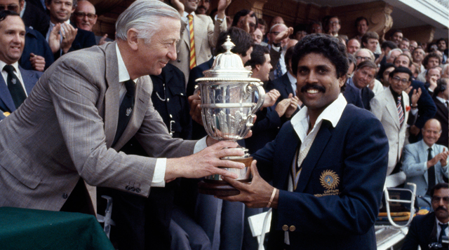
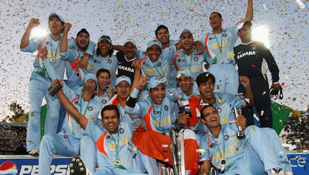
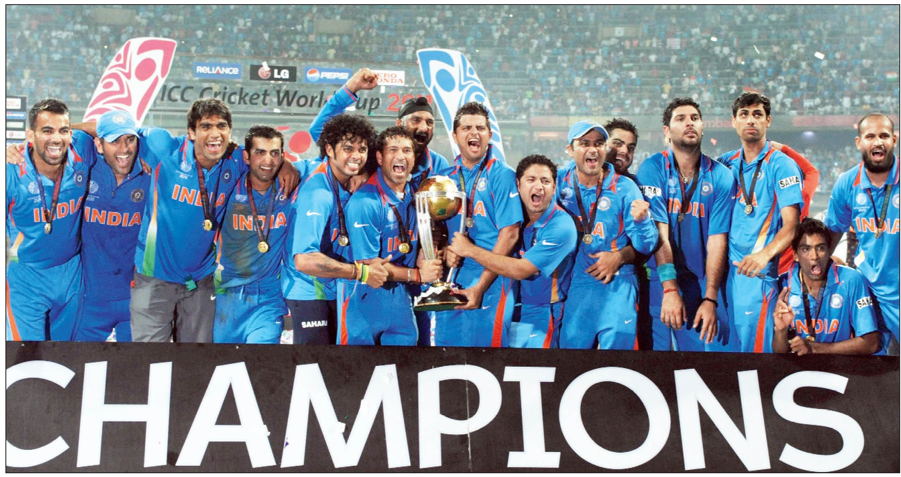

1983 World Cup: Miracle at Lord's
There are moments in Indian cricket history that live forever. Indian Cricket Captain Kapil Dev holding aloft the Prudential World Cup on the balcony at Lords in London or gleefully spraying champagne on the frenzied crowds below is one of them.

Starting as unfancied underdogs with London bookies providing 50:1 odds against them, the Indian eleven steered a triumphant if somewhat erratic course to a suspenseful cliff--hanger of a final against the apparently unbeatable the Indies, unvanquished in one-day cricket and winners of the previous 2 tourney titles in 1975 and 1979.
it absolutely was beyond question Indias- and international crickets- finest hour. No comparable event will match the joy and athletic heights that restricted overs cricket achieves. The setting couldnt are a lot of perfect-England, wherever the globe Cup originated and that remains the sole country which will with success stage such a spectacular show. Even the weather appeared awestruck by the occasion, driving rain giving means graciously to sensible sunshine.
Cricketing Giants: On show was the cream of international cricket, men WHO ar larger than their legends. The unrivaled Vivian semiotician, arguably the most effective hitter within the world these days. The baleful American pacemen, Joel Garner, Malcolm Marshall, Michael Holding and Andy Roberts, whose grace and thinness is pure poetry. The Australians Dennis Lillee and Jeff Thomson, 2 of the quickest bowlers in history. The elegant David Gower and Ian Botham of European country. Pakistans run-machines Zaheer Abbas, Javed Miandad and also the ever-dangerous Imran Khan.
Against giants like these. Indias possibilities were microscopic. True, in Gavaskar and Mohinder Amarnath, that they had batsmen of the best calibre; and in Kapil Dev, associate degree expert of match-winning ability. however the sole quality the remainder of the team shared was uncurbed enthusiasm and an enormous love for the sport. Their previous tourney record was dismal. In 1979, the Indians didnt win one game and in 1975, succeeded in beating solely lowly East Africa.
Obviously, Indian cricketers were inadequately equipped for one-day cricket. around it appeared. From the day the Indians started their challenge on Gregorian calendar month nine at previous Trafford, there was one thing a few them that smelled and looked totally different. On the sector and off, they displayed a collective determination that had not been conspicuous before. only 1 man caught the infection: Australian Captain Kim Hughes. Before the tournament started, Hughes foreseen that Bharat would be the "dark horse of the globe Cup".
Indias road to glory in ICC World T20 2007
India became first team to lift the T20 World cup and also the first and only nation to win World cups in three different formats.

The inaugural independent agency World T20 occurred in African nation in 2007. India were on a verge of a reconstruction track once a unfortunate exit from the independent agency tournament 2007 in West Indies. astonishingly, MS Dhoni was two-handed over the rresponsibilityto lead the team during this tournament. together with the likes of Virender Sehwag, Gautam Gambhir, Yuvraj Singh and Harbhajan Singh, the team looked well-equipped. Indias 1st match against Scotland was abandoned while not a ball being thrown.
The second and crucial match that India vie was against arch rivals West Pakistan. India incorporates a record of 100 % wins against West Pakistan in World cups and that they didnt break this streak within the shortest format also. in a very breath-taking encounter that went into the bowl-out stage (which is currently became super-over), India grabbed a win. before this bowl out, Robin Uthappas fifty and later S. Sreesanths intelligent bowling together with Yuvraj Singhs fielding efforts prevented West Pakistan to chase a modest total of 142 runs.
After winning this match against West Pakistan, India qualified for the super-eight stage. India were placed with New island, African nation and European country here. They lost the primary super-eight stage match to New island by ten runs despite a good performance by the Indian batting line up whereas chasing one hundred ninety runs.
India then vie their next match against European country. This was one amongst the foremost vital encounters as another loss would have shown the boys in Blue exit gates from the globe T20. Indian batting too didnt take the match nonchalantly as they scored a mammoth 218 runs in assigned twenty overs. Yuvraj Singh smashed English bowler Stuart Broad for 6 sixes in Associate in Nursing over. India clenched triumph by eighteen runs.The last of the super-eight matches for India came against the hosts African nation. a complete of 153 runs set by Indian batter was spare to register a semi-final berth. RP Singh emerged because the finest Indian bowlers as he grabbed four wickets as well as those of Herschelle Gibbs, Graeme Smith, Shaun Pollock and Albie Morkel. India won the match by thirty seven runs.
India baby-faced "favourites" Australia within the semi-final. Electing to bat 1st once wining the toss, India went on to get 188 runs in twenty overs. Yuvraj came up with another fascinating batting show as he used thirty balls to get seventy runs. In reply, Mathew Hayden and Andrew Symonds designed up a partnership to form pressure on India before Sreesanth 1st bowled Mathew Hayden followed by Andrew Symonds. Eventually, India emerged as winners by fifteen runs.
The spectators couldnt have demanded for a far better final of this World T20. it had been India against West Pakistan. MS Dhoni selected to bat 1st and India scored 157 runs wherever Gautam Gambhir scored a 0.5 century within the method. Chasing the total, West Pakistan were left tottering at seventy seven for six. everyone thought that India would register a win quite well however Misbah-ul-Haq had different plans. The Pakista batter scan matters within the best manner and helped Pakistan to require the match within the final over wherever they needed thirteen runs off six balls. Harbhajan Singh was left with one over however instead Dhoni two-handed over the ball to Joginder Sharma. the primary ball went for a large, the following was a dot delivery and therefore the third went for a six to cut back the asking rate. West Pakistan were currently left with a deficit of six runs off four balls. however an endeavor from Misbah shattered Pakistans possibilities to win the 2007 World T20. He hit this delivery straight into Sreesanths hands United Nations agency was positioned at short fine-leg. West Pakistan were full-scale for 152.
India clinches the 2011 World Cup in grand style
India became first team to lift the T20 World cup and also the first and only nation to win World cups in three different formats.

Twenty-eight years when Indian cricket modified forever on Associate in Nursing English summers day, the countrys dream of enhancing its name as a significant force within the world game found wonderful realisation at the Wankhede construction in urban center on Saturday.
Mahela Jayawardene lit up the globe final with a century (103 not out) of rare radiance, sanctionative land to get 274 for 6 in fifty overs. however Gautam Gambhir responded with Associate in Nursing innings of ninety seven that was even as masterful. Captain M.S. Dhoni (91 not out) summoned his best fraught and hit the winning runs a six to gift Asian nation and also the nice Sachin Tendulkar the globe Cup.
Indias mood had been grim once Lasith Malinga impaired it early. The Sri Lankan fast-bowler cornered Virender Sehwag lbw for a duck within the initial over before having Sachin Tendulkar caught behind within the seventh. Tendulkar had looked in fine bit throughout his transient keep the maestros dismissal surprised the house crowd into silence whereas Sri Lankas cricketers celebrated the massive wicket that had left Asian nation at thirty one for 2.
Gambhir saw out the rest of Malingas initial spell and took calculated risks against the opposite seamers to confirm that Asian nation unbroken pace with the asking rate. it absolutely was brave, intelligent batting beneath force. Virat Kohli (35) applied himself to the task of reconstruction the innings, serving to raise eighty three for the third wicket before he fell to an excellent one-handed come back catch by Tillakaratne Dilshan.
Dhoni promoted himself on top of Yuvraj Singh to hitch Gambhir. Together, the 2 batsmen set regarding dominant the run chase, guarding against Muttiah Muralitharan, World Health Organization display a threat despite not being totally match, and Malinga, whose pace and distinctive action deserved careful handling.
Whenever the chance conferred itself, once Kumar Sangakkara brought the sphere up as an example or one amongst the bowlers erred, Gambhir and Dhoni capitalised. Dhoni additionally pushed a wearying Gambhir laborious between the wickets, making certain that the fielders were perpetually hassled and also the bowlers had to typically switch line. simply once it appeared as if the pressure had been transferred to land, the 109-run partnership terminated.
India required fifty two in fifty two balls when Gambhirs departure. Dhoni and Yuvraj brought it right down to thirty within the last 5 overs, which might span the batting attempt, before a three-run over from Malinga created it tense. The batsmen were ready to relieve the pressure within the next 2 overs, delivered by Nuwan Kulasekara and Malinga. it absolutely was a matter of your time before the remainder of the Indian team surged onto the sphere to celebrate the historic six-wicket win.
Saturday afternoon witnessed drama, and this was before a ball had been bowled within the match. The toss had to be staged doubly when match referee Jeff Crowe same he hadnt detected Sangakkaras decision the primary time.
India fleetly place the frustration of losing the toss behind it. Zaheer Khan made Associate in Nursing exceptional initial spell, bowling 3 sequential maidens before having Upul Tharanga well caught at slip away Sehwag. The ground-fielding was of a prime quality still. Yuvraj and Raina looked significantly spectacular. As a result, land managed solely thirty one runs within the initial 10 overs.
Dilshan (33) and Sangakkara (48) looked to hasten the speed. They targeted Sreesanth, World Health Organization was most well-liked over R. Ashwin to interchange Associate in Nursing burned Ashish Nehra within the Indian team. The combine adscititious forty three for the second wicket before Dilshan, World Health Organization became the primary batter to achieve five hundred runs within the 2011 edition, dragged a sweep away Harbhajan Singh onto the stumps.
Jayawardene regular and placed the ball adeptly to rotate the strike before fast typically with trendy, orthodox cricket strokes within the finish overs. He was concerned in partnerships of sixty two with Sangakkara for the third and fifty seven with Thilan Samaraweera for the fourth wicket.
India fought back, reducing land to 182 for 5. however Jayawardene appeared to realize the boundary at can within the batting attempt, that came into force when the forty fifth over. Nuwan Kulasekara (32) and Thisara Perera (22 not out off 9 balls) gave him the support he required in arduous Indias bowling. Zaheer, World Health Organization had started thus well, went for thirty five runs in his last 2 overs, the forty eighth and fiftieth of the Sri Lankan innings.